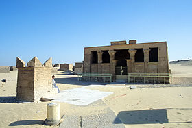
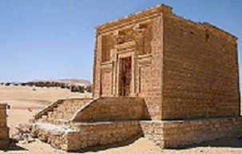
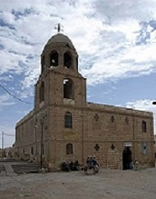
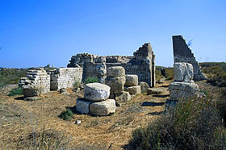

.بني حسن هي منطقة أثرية فيها جبانة مصرية قديمة ،
وهي تقع جنوب مدينة المنيا بحوالي 20 كيلومترا في المنطقة المعروفة
باسم مصر الوسطى الممتدة بين أسيوط و منف (ميت رهينة).
و برغم وجود بعض المقابر من عهد الدولة القديمة في الجبانة،
إلا أن هذه الجبانة كانت تستخدم بشكل رئيسي خلال عصر الدولة الوسطى،
والتي تمتد من القرن 21 ق.م إلى القرن 17 ق.م (العصر البرونزي الوسيط).
و إلى الجنوب من الموقع يوجد معبد تم تشييده على يد الملكة حتشبسوت و خلفها الملك تحتمس الثالث،
و هو مكرّس لعبادة الإلهة المحلية لهذه المنطقة باخت.
و هو المعروف حالياً باسم مغارة أرتميس، لأن اليونانيين وحّدوا بين الإلهة المصرية باخت والإلهة اليونانية أرتميس ،
و سمي مغارة لأن المعبد مبني تحت الأرض
.Bani Hassan is an archaeological area with an ancient Egyptian cemetery
It is located about 20 km south of Minya, in the well-known area
.In the name of Middle Egypt, which extends between Asyut and Memphis (Mitt Rahina)
,Although there are some tombs from the era of the Old Kingdom in the cemetery
,However, this cemetery was used mainly during the Middle Kingdom
.Which extends from the 21st century BC to the 17th century BC (Middle Bronze Age)
.To the south of the site there is a temple that was built by Queen Hatshepsut
and behind her by King Thutmose III
.It is dedicated to the worship of the local goddess Bakht
,It is currently known as the Cave of Artemis
,because the Greeks united between the Egyptian goddess Bakht and the Greek goddess Artemis
It was called a cave because the temple was built underground
الجبانة:
كانت العادة لحكام المقاطعات في الدولة الوسطى أن يدفنوا في مقابر محلية في مقاطعاتهم مقطوعة في الصخر ومزينة بالنقوش والرسوم،
وتم بدء هذه العادة منذ عصر الاضمحلال الأول في مواقع مثل بني حسن.
و هناك دليل على حدوث إعادة تنظيم لنظام الحكم في عهد الأسرة الثانية عشر ،
و خلال الفترة الانتقالية الأولى وامتداداً لجزء من عصر الدولة الوسطى كان من الشائع للحكام المحليين (الشخص الذي يحكم أو يشرف على منطقة معينة) أن تكون مناصبهم وراثية،
ولم تعتمد الطبقات الحاكمة في المقاطعات على الملك لإضفاء الشرعية على قوتها بقدر ما كان الأمر في عصر الدولة القديمة.
و خلال عهد الأسرة الـ12 بدأت قوة الحكام المحليين تخضع لقيود،
وكان تعيين حكام الأقاليم أو على الأقل تثبيتهم على عروشهم بإضفاء الشرعية عليهم لا يتم إلا من خلال الملك.
هناك 39 من المقابر القديمة في بني حسن من عهد الدولة الوسطى (من حوالي القرن 21 إلى القرن 19 ق.م) لحكام مقاطعة الغزال (المقاطعة 16 من مقاطعات الوجه القبلي)
الذين حكموا من عاصمة المقاطعة المسماة حبنو. و نظرا لنوعية الصخور،
والمسافة إلى المنحدرات في الغرب،
:cowardice
.It was the custom of provincial rulers in the Middle Kingdom to be buried in local cemeteries in their provinces cut out of the rock and
decorated with inscriptions and drawings
. This custom has been started since the era of the first decay in sites such as Beni Hassan
. There is evidence of a reorganization of the system of government during the reign of the Twelfth Dynasty
, During the first transitional period and as an extension of part of the Middle Kingdom
, it was common for local rulers (the person who rules or supervises a particular area) to have hereditary positions
. The ruling classes in the provinces did not rely on the king to legitimize their power so much as in the Old Kingdom
. During the Twelfth Dynasty, the power of local rulers began to be restricted
, The appointment of the governors of the provinces
. or at least their confirmation on their thrones by legitimizing them, was only through the king
,There are 39 ancient tombs in Beni Hassan from the Middle Kingdom period
(from about the 21st century to the 19th century BC) of the rulers of the Ghazal Province
(16th District of Upper Egypt)
,Who ruled from the provincial capital called Habno. And given the quality of the rocks
, And the distance to the cliffs in the west
,.These tombs were built on the east bank, unusual for Egyptian tombs
منطقة تونة الجبل (Tuna Al Jabal ) :

قرية تونة الجبل (بالقبطية: ⲑⲱⲛⲓ)، هي إحدى القرى التابعة لمركز ملوي بمحافظة المنيا في جمهورية مصر العربية،
كانت قديمًا المدينة الجنائزية لمدينة هيرموبوليس.
,The village of Tuna al-Jabal (in Coptic: ⲑⲱⲛⲓ)
.is one of the villages of Mallawi district, Minya Governorate, in the Arab Republic of Egypt
.In the past it was the funerary city of Hermopolis
آثار القرية:
توجد بالقرية مقابر لقردة البابون وصقور وطيور أبي منجل المقدسة للإله "تحوت"،
إضافة إلى جبانة مدينة هيرموبوليس،
ومقبرة بيتوسريس الكاهن الأكبر للإله تحوت المكتشفة سنة 1919م، والتي ترجع إلى القرن الرابع قبل الميلاد.
:Village monuments
",In the village there are tombs of baboons falcons and ibis sacred to the god "Thoth
In addition to the necropolis of Hermopolis
And the tomb of Petosris,the high priest of the god Thoth discovered in 1919 AD and which dates back to the fourth century BC

مقبرة ومصلى إيزادورا :
كانت إيزادورا شابة ثرية وجميلة تعيش في هيرموبوليس في القرن الثاني الميلادي، وقعت في حب جندي شاب من أنطينوبولس، وأرادوا الزواج. لكن أبوها رفض، لذلك قرر الشابان الهرب. لسوء حظهما، غرقت إيزادورا أثناء عبورها النيل. تم تحنيط جسدها، وقام والدها ببناء قبر متقن لها. تحتوي مقبرتها على قصيدة من 10 أسطر منقوشة باليونانية. في وقت ما بعد وفاتها، أصبح القبر مزارًا دينيًا، لا تزال بقايا إيسادورا المحنطة موجودة ومغطاة بالزجاج في ضريحها - وهو مبنى بارز في تونة الجبل. :The Tomb and Chapel of Isadora .Isadora was a wealthy and beautiful young woman who lived in Hermopolis in the second century AD .She fell in love with a young soldier from Antinopolis, and they wanted to marry .But her father refused, so the two young men decided to run away . Unfortunately for them, Isadora drowned while crossing the Nile .Her body was embalmed, and her father built an elaborate tomb for her . Her tomb contains a 10-line poem inscribed in Greek . Sometime after her death, the tomb became a religious shrine - Isadora's mummified remains are still found and covered in glass in her mausoleum a prominent building in the Tuna Mountain
معارض الحيوانات المقدسة:
أجرى أندريه جومبرت حفريات لمقبرة بين سنتي 1902-1903م، بتكليف من المعهد الفرنسي للآثار الشرقية. وفي سنة 1919م، تم الإعلان عن اكتشاف قبر بيتوسيريس. وأعيد استكشافه في العام التالي بواسطة غوستاف ليفبفر. بين سنتي 1931-1951م، قام فريق من جامعة القاهرة برئاسة سامي جبرا بفحص جميع المقابر حول مقبرة بيتوسيريس، ونُقلت التحف المكتشفة إلى المتحف المصري في القاهرة. وبين سنتي 1972-1974م، كلف المعهد الأثري الألماني كل من غونتر غريم وديتر كيسلر لتوثيق مباني وآثار المقبرة في متحف ملوي. ومنذ سنة 2017م، تم اكتشاف العديد من المومياوات. وفي فبراير 2019م، تم الإعلان عن اكتشاف مقبرة فرعونية تحتوي على أكثر من 40 مومياء وآثار خزفية. :Sacred animal fairs .André Gombert conducted excavations of a cemetery between 1902-1903 .Commissioned by the French Institute of Oriental Archeology .In the year 1919 AD, the discovery of the tomb of Petosiris was announced .It was rediscovered the following year by Gustav Lefebvre , Between the years 1931-1951 AD ,a team from Cairo University headed by Sami Jabra examined all the tombs around the cemetery of Petosiris .The discovered artifacts were transferred to the Egyptian Museum in Cairo , And between the years 1972-1974 AD the German Archaeological Institute commissioned Günther Grimm and .Dieter Kessler to document the buildings and monuments of the cemetery in the Malloy Museum .Since 2017, many mummies have been discovered ,In February 2019 .it was announced that a pharaonic tomb containing more than 40 mummies and ceramic artifacts had been discovered
كنيسة العذراء بجبل الطير (Church of the Virgin in Jabal Al-Tair):

تقع كنيسة السيدة العذراء على قمة جبل الطير الملاصق للنيل،
وتعد من أهم المزارات الخاصة بالعائلة المقدسة أثناء رحلتها إلى مصر بعد دير المحرق، وقد سمى هذا الجبل "بجبل الطير"
نسبة إلى أنه كان يتردد عليه مجموعة كبيرة من الطيور تسمى البوقيوس الأبيض،
كذلك عرف "بجبل الكهف" و"دير البكرة".وقد أنشأت الكنيسة على يد الملكة هيلانه والدة الإمبراطور قسطنطين عام ٣٢٨م.
نحتت الكنيسة في الصخر الصلد، وغالبًا ما كانت مدفنًا فرعونيًا أو رومانيًا تحول إلى كنيسة.
والكنيسة لها مدخل يقع جهة الغرب يعلوه أحجار منحوتة مختلفة الأحجام تتميز بنقوشها الرائعة، وهي تتخذ في تخطيطها نمطاً يقرب إلى الشكل البازيليكي؛
إذ تتكون من صحن ذي ثلاثة أجنحة وخورس يتقدم الهيكل وعلى جانبيه حجرتان.
ويتضمن الصحن المعمودية الأثرية المنفذة داخل أحد الأعمدة الحجرية الكبيرة، كما يتوسط صحن الكنيسة حوض اللقان،
وفي الناحية الجنوبية الشرقية نجد المغارة أو الكهف الذي مكثت فيه العائلة المقدسة لمدة ثلاثة أيام.
.The Church of the Blessed Virgin is located at the top of Jabal al-Tair, adjacent to the Nile
, It is considered one of the most important shrines of the Holy Family during its trip to Egypt after the Muharraq Monastery
.and this mountain was called "Jabal al-Tair
.It is attributed to the fact that it was frequented by a large group of birds called the white Buqius
.It was also known as "Jabal al-Kahf" and "Deir al-Bakrah
.The church was established by Queen Helena, mother of Emperor Constantine in 328 AD
.The church was carved out of hard rock, and it was often a pharaonic or Roman tomb that was turned into a church
. The church has an entrance located on the west side
, It is topped with carved stones of different sizes, characterized by their wonderful inscriptions
.and they take in their planning a pattern close to the basilica shape
. It consists of a nave with three wings and a choir in front of the temple and on its sides are two rooms
, The nave includes the ancient baptismal executed inside one of the large stone columns
.and in the middle of the nave of the church is the Al-Laqan Basin
.On the southeast side, we find the cave or cave in which the Holy Family stayed for three days

قرية الأشمونين هي إحدى القرى التابعة لمركز ملوى بمحافظة المنيا في جمهورية مصر العربية.
حسب إحصاءات سنة 2006، بلغ إجمالي السكان في الأشمونين 12650 نسمة، منهم 6137 رجلا و 6513 امرأة.
وهي تجاور أطلال مدينة «خمون» الفرعونية
(والتي سماها الإغريق: هيرموبوليس (بالإغريقية: Ἑρμοῦ πόλις) أي مدينة هرمس،
وسموها أيضا هيرموبوليس ماجنا (بالإغريقية: Ἑρμοῦ πόλις μεγάλη))، (بالقبطية: Ϣⲙⲟⲩⲛ)
والأشمونين ذات تاريخ قديم حيث كانت مزدهرة على طول التاريخ الفرعوني والعصر اليوناني الروماني
وما زال بها بعض الآثار الفرعونية واليونانية.
تقع تل العمارنة والتي كانت في الماضي العاصمة الجديدة التي بناها
إخناتون وتسمى أخيتاتون على الضفة الغربية تقريبا لمدينة الأشمونين.
عثر في الأشمونين على مقبرة «أمير المقاطعة» في عهد الفراعنة واسمه تحوت حتب،
وهي مقبرة من أجمل مقابر قدماء المصريين.
.The village of Al-Ashmounain is one of the villages of the Mallawi district, Minya Governorate, in the Arab Republic of Egypt
.According to 2006 statistics, the total population of Ashmounin was 12,650 people, including 6,137 men and 6,513 women
It is adjacent to the ruins of the Pharaonic city of Khamun
,(which the Greeks called: Hermopolis (Greek: Ἑρμοῦ πόλις), meaning the city of Hermes
.They also called it Hermopolis Magna (Greek: Ἑρμοῦ πόλις μεγάλη)) (Coptic: Ϣⲙⲟⲩⲛ)
The Ashmounin has an ancient history, as it was flourishing throughout the pharaonic history and the Greco-Roman era
. It still has some Pharaonic and Greek monuments
Tell el-Amarna, which was in the past the new capital that he built, is located
. Akhenaten is called Akhetaton on the western bank of the city of Ashmounin
.In Ashmounin, the tomb of the “Prince of the Province” during the era of the Pharaohs was found, whose name is Thothhotep
.It is one of the most beautiful tombs of the ancient Egyptians